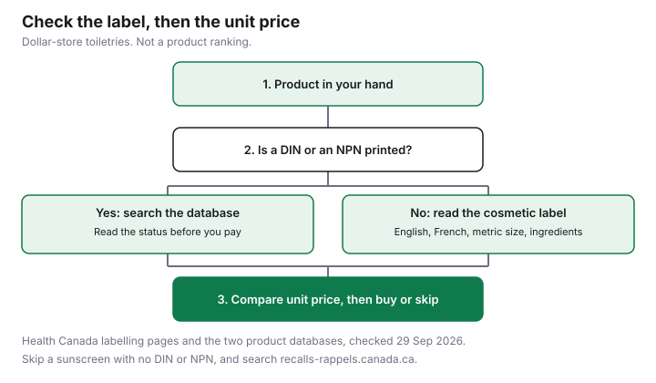

Personal Care · Canada
Dollar-Store Toiletries in Canada: What's a Bargain and What to Skip
A dollar-store toiletry is a bargain when the price per millilitre or per gram is lower than the product you would actually buy, and when the label is the label the law expects for that kind of product. It is a skip when the bottle is small, the sticker only looks low, or a sunscreen is missing the number and the date Health Canada talks about. Dollarama’s homepage, checked 29 Sep 2026, did not publish toiletry prices or a price ceiling. This guide does not quote them. It gives you the checks to do with the tag in your hand. No product is ranked.
Key takeaways
- Unit price is the sticker divided by the metric net quantity. Compare per 100 mL or per 100 g with another store. The Dollarama homepage does not list the prices.
- A cosmetic label must show a bilingual identity, a metric size, an INCI ingredient list, dealer details, warnings, and safe-use directions. That list does not get shorter because the store is a dollar store.
- A DIN goes to the Drug Product Database. An NPN goes to the Licensed Natural Health Products Database. Read the status.
- Skip sunscreen without a DIN or NPN and without an expiry date. Skip electronics this guide cannot cite a standard for. Search recalls-rappels.canada.ca.
- The chart is a decision flow, not a ranking and not a price survey.
Unit prices vs other stores
Write the price and the metric size before you leave the aisle. Cost per 100 mL is price ÷ millilitres × 100. Cost per 100 g is the same with grams. Example with made-up inputs: a $4 bottle of 100 mL is $4.00 per 100 mL, and a $9 bottle of 400 mL is $2.25 per 100 mL. Neither is a shelf price. If your dollar-store bottle is the $4 shape and the drugstore bottle is the $9 shape, the dollar store is the expensive one per millilitre. The price-check sheet is the place to line Dollarama up with Walmart, Shoppers Drug Mart, and Costco on products you actually buy. The household comparison is where a corporate price range from Dollarama’s annual information form is discussed for other goods. This page does not reprint that range, because the Dollarama homepage does not print it, and a range for the whole store is not a toiletry unit price.
Finish the bottle or the unit price is fiction. A low price per 100 mL on a bottle you will not finish is a higher price per 100 mL of what you use. Put the amount you will use in the denominator instead of the amount printed, when those differ. The same habit is on the store-brand guide. A dollar-store brand is allowed to win that sheet. It is not owed the win.
Sizes and shrinkflation
Shrinkflation here is a smaller net quantity in a package that still looks familiar. Cosmetic labels must state net quantity in metric units, in English and French, under the labelling pages checked 29 Sep 2026. That line is the defence. Read 75 mL as 75 mL even when the bottle is as tall as last year’s 100 mL. Do not compare bottle height, cap colour, or the word “bonus” without a number. If a package says “2 bars” or a count, use the count, and still read any gram weight beside it.
Travel sizes are a special case of the same trick. A 30 mL bottle at a low sticker can be a miserable price per 100 mL and still be the right buy if you need a container at or under 100 mL for a flight and you would otherwise buy a mini at a higher rate. The carry-on limit is the CATSA liquids guide. Do not buy a strip of minis you will not use just because each sticker is small. Three unused minis are three purchases.
Safety: DIN/NPN and labels
Sort the product before you sort the price. If the package prints a DIN, search Health Canada’s Drug Product Database and read the status. The search page, checked 29 Sep 2026, lets you search by DIN, by product name, or by active ingredient, and the status list includes marketed, dormant, and several cancelled states. A cancelled record is not a green light because the bottle is in your hand. If the package prints an NPN, search the Licensed Natural Health Products Database. That page distinguishes licence status from market status. Market status is voluntary. A licence that is suspended, cancelled, or under a stop sale cannot legally be sold in Canada, in the words on that page. A “not marketed” flag does not, by itself, mean a sale is illegal, because the page says market notification is voluntary.
If there is no DIN and no NPN, treat it as a cosmetic unless the claims say otherwise. Health Canada’s advertising page says you should doubt a therapeutic claim, one that suggests the product treats or prevents a disease or changes a body function, when no DIN or NPN is printed. Those claims are for drugs and natural health products, not for cosmetics. The cosmetic label still has to show the ingredient list in INCI names, the identity in English and French, the metric quantity, dealer contact information, warnings, and directions for safe use. “Hypoallergenic” is not a legal or scientific term on that page. It does not mean nobody will react. Read the ingredients if you already know what bothers you. The dupes and counterfeits guide is the separate problem of a product that is not what the label claims to be.
Good buys: basics, travel items
Basics are the rows where the comparison is size and the ingredient list, not a drug claim: a bar of soap by the gram, a simple wash by the millilitre, cotton rounds by the count. Buy the one with the lower unit price that you will finish, after you have read the label. Travel items are the rows where a small metric size is the point, because you need it to fit a rule or a bag, not because the per-millilitre price is kind. A spare toothbrush, a small soap, or a 50 mL bottle you will actually bring can be a sensible dollar-store buy when the label is intact and the unit price is not absurd next to decanting a bottle you already own. This is not a list of named products to grab. It is a description of the rows worth running the math on.
Walk past a display that mixes those basics with products that need a number. A low sticker on a toothpaste that promises to treat a condition, with no DIN or NPN, fails the therapeutic-claim check before it earns a unit-price check. A toothpaste sold as a cosmetic, with an ingredient list and no treatment claim, can go through the unit-price check like soap. If you want a fluoride product because a dentist told you to use one, you are in the numbered-product check, and the dollar store does not get a special pass. Confirm the number. This is not dental advice.
Skip: sunscreen without clear labelling, electronics
Sunscreen is the clearest skip. Health Canada says every sunscreen approved for sale in Canada has a DIN or an NPN, and that all sunscreens have expiry dates. An expired sunscreen may be less effective. A bottle with no number, or no date you can read, does not pass that page. Do not buy it because the sticker is low and the season is short. The sunscreen guide is the price-per-millilitre version once a bottle has the number and the date. Broad-spectrum and SPF 30 or higher are the use instructions on Health Canada’s page, not a ranking of stores.
Electronics in the same aisle, a USB light, a cheap trimmer, a charger in a basket by the toothpaste, are not cosmetics and not sunscreens. This guide does not cite a safety standard, a failure rate, or a test for them. Do not let a toiletry method bless a device. Search the recall site before you rely on any bargain, toiletry or not. Recalls and safety alerts at recalls-rappels.canada.ca, checked 29 Sep 2026, is the public search, and the page details say it was modified 2026-09-29. Report a product that hurts you. A recall list changes. A homepage photo of other people’s recalls is not a clearance of the bottle in your basket.
| Category | Check | Lean |
|---|---|---|
| Soap, wash, cotton | Metric size or count, ingredient list, price per 100 g or 100 mL | Buy when you will finish the winner of that division |
| Travel size | Same unit price, plus whether you truly need the small container | Buy a size you will pack. Skip a strip of minis you will not open |
| Toothpaste and similar | Therapeutic claim needs a DIN or NPN. Otherwise read the cosmetic label | Look up the number. Do not call it safe because of the store |
| Sunscreen | DIN or NPN, and an expiry date | Skip if either is missing |
| Chargers, lights, other devices | Not a cosmetic-label decision. Search the recall site | Skip as a toiletry purchase |

Sources & date stamps
- Dollarama homepage, dollarama.com/en-CA, checked 29 Sep 2026. Store finder, careers, and customer-service links. No toiletry price and no price ceiling on that page.
- Health Canada, Labelling of cosmetics, and Cosmetic advertising, labelling and ingredients, checked 29 Sep 2026. Mandatory label elements. Therapeutic claims need a DIN or an NPN. Hypoallergenic is not a legal or scientific term.
- Health Canada, Drug Product Database search, checked 29 Sep 2026. Search by DIN, product name, or active ingredient. Status values include marketed, dormant, and cancelled states.
- Health Canada, Licensed Natural Health Products Database, checked 29 Sep 2026. Licence status is separate from voluntary market status. Suspended, cancelled, or stop-sale licences cannot legally be sold.
- Health Canada, Sunscreens, checked 29 Sep 2026. Approved sunscreens have a DIN or an NPN. All sunscreens have expiry dates. An expired sunscreen may be less effective.
- Recalls and safety alerts, recalls-rappels.canada.ca/en, checked 29 Sep 2026. Page modified 2026-09-29. Search and report tools. No toiletry recall is quoted from that day’s list.
Frequently asked questions
Are dollar-store toiletries worth buying?
Sometimes, after you divide the price by the metric size on the label. Dollarama’s public homepage, checked 29 Sep 2026, did not list toiletry prices, so this guide does not quote one. A low sticker on a small bottle can cost more per 100 mL than a larger bottle somewhere else. Buy when the unit price is lower and you will finish it, and skip when the label fails the checks below.
Is dollar-store toothpaste safe?
This page does not declare a toothpaste safe or unsafe because of the store that sold it. Doubt a therapeutic claim when no DIN or NPN is printed, and if a number is printed, search it and read the status. If it is sold as a cosmetic, read the ingredient list and the bilingual identity. A lower price is not a safety finding.
What should I skip at the dollar store?
Skip a sunscreen that does not show a DIN or an NPN, and skip one that does not show an expiry date. Health Canada says approved sunscreens carry one of those numbers and that all sunscreens have expiry dates. Skip a charger, a light, or another device you are treating as a toiletry: this guide does not cite a safety standard for it. Search recalls-rappels.canada.ca for the product in your hand.
How do I compare unit prices there?
Read the metric net quantity the cosmetic rules require, not the height of the bottle. Divide the price by the millilitres or grams, then multiply by 100 if you want a per-100 figure you can compare with a grocery shelf tag. Write both numbers down. A bottle that looks the same size as last year is shrinkflation when the metric figure got smaller.
Are dollar-store items regulated like other toiletries?
The banner does not create a second set of cosmetic rules on the pages checked 29 Sep 2026. A cosmetic still needs the label elements Health Canada lists, and a drug or natural health product still needs its DIN or NPN and a status you can look up. A product that fails those checks is not a bargain. It is a skip.
Researched and drafted with AI assistance and fact-checked against official Canadian sources. How we create content.